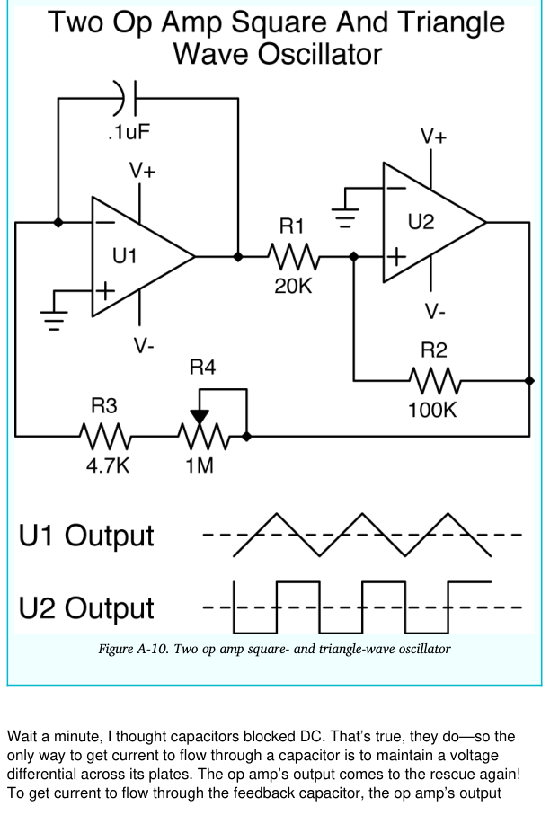

Square + triangle two op amps
This is the "triangle core" that most synth oscillators are built on. One op amp is an integrator, which ramps up and down to make the triangle. The other is a comparator, which flips at the top and bottom of each ramp and makes the square. Each one drives the other.

You need
- A solderless breadboard, solid hook-up wire, and the parts below.
- A split supply (+V, ground, −V). The easy way is two 9 V batteries in series: the joint between them is ground, the free + end is +9 V and the free − end is −9 V.
- An oscilloscope helps a lot here, because you will want to see the waves as you adjust them. A cheap USB scope or a sound-card scope app is enough at audio frequencies.
- Something to listen with: a small amp or powered speaker, volume low to start.
Pinout
Build it
- Place the TL072 and wire pin 8 to +V and pin 4 to −V. Op amp A (pins 1, 2, 3) is U1 and op amp B (pins 5, 6, 7) is U2.
- U1, the integrator: pin 3 (+) to ground. Put the 0.1 µF capacitor between pin 2 (−) and pin 1 (out).
- U2, the comparator: pin 6 (−) to ground. R1 (20 kΩ) from U1's output (pin 1) to pin 5 (+). R2 (100 kΩ) from pin 5 to U2's output (pin 7).
- Close the loop: from U2's output (pin 7), through the 1 MΩ pot (R4) and 4.7 kΩ (R3), into U1's pin 2.
- Power up. The triangle is at pin 1 and the square is at pin 7. Turning R4 changes the pitch of both.
How it works
When U2's output is saturated high, current flows through R3 + R4 into U1's inverting input, and U1's output ramps down steadily. That ramp is one side of the triangle. Through R1 it drags U2's + input down until it crosses zero, U2 slams low, the current reverses, and U1 ramps back up. The R1/R2 divider decides where U2 flips, so it sets the triangle's height. The pot sets how fast the ramps run, so it sets the pitch.
f ≈ (R2 / R1) / (4 · (R3 + R4) · C)
With the book's values that's about 12 Hz to 2.7 kHz across the pot. The triangle is about 4.2 V peak to peak on ±12 V. To make it bigger, increase R1 or decrease R2.
Feeding the triangle → sine converter. The triangle → sine recipe expects about ±5 V, but this triangle is only about ±2.1 V. To run both from one ±9 V supply, try changing R1 from 20 kΩ to about 68 kΩ. That makes the triangle roughly ±5 V. The bigger R1 also lowers the pitch, so change C from 0.1 µF to 0.033 µF to keep a range of about 10 Hz–2.4 kHz. These two values are worked out from the formula above, not taken from the book, and have not been tested.
References
- Ray Wilson, Make: Analog Synthesizers, Maker Media, 2013. Appendix A, "Simple but Useful Op Amp Oscillators" (Figures A-9 and A-10).
- Ray Wilson, Music From Outer Space: the author's site with complete synth DIY projects built from these blocks.
- Texas Instruments, TL072 datasheet.